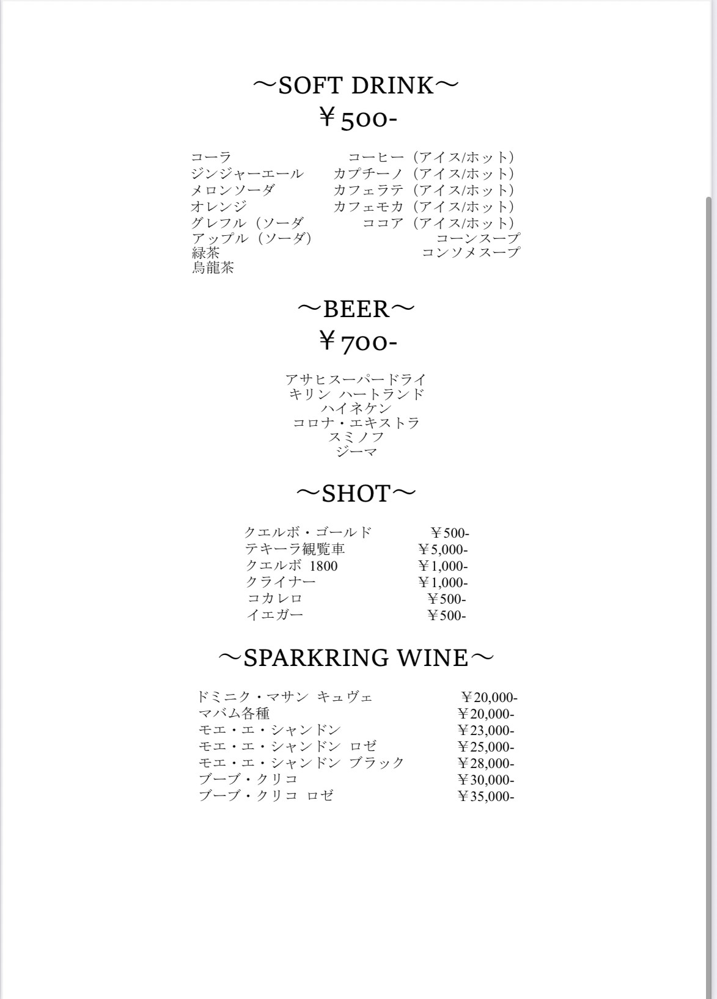
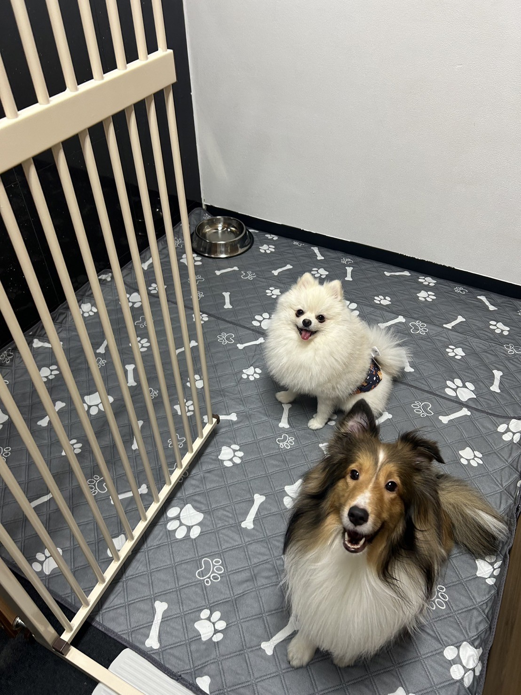
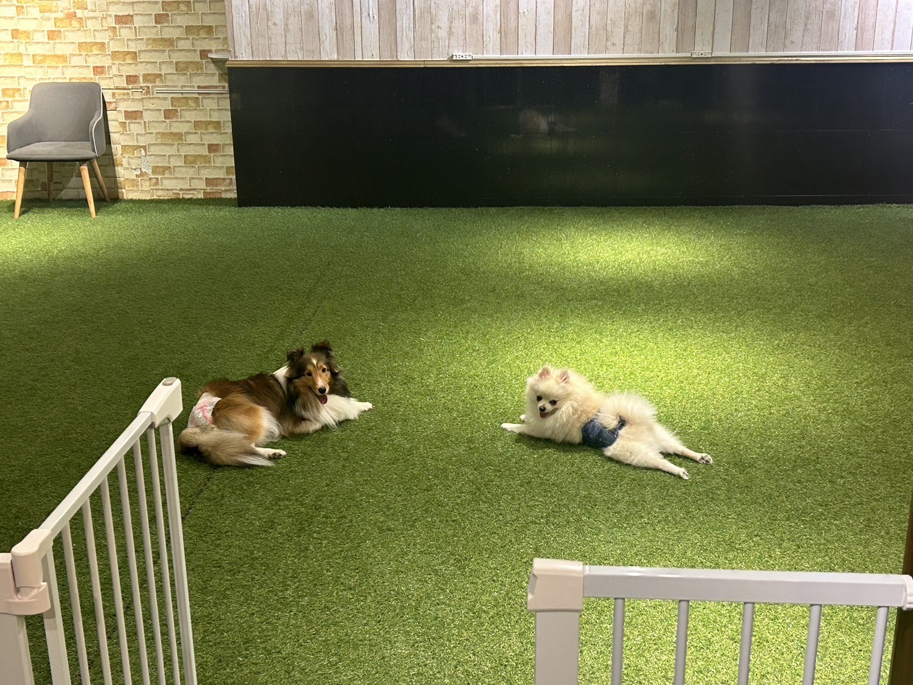
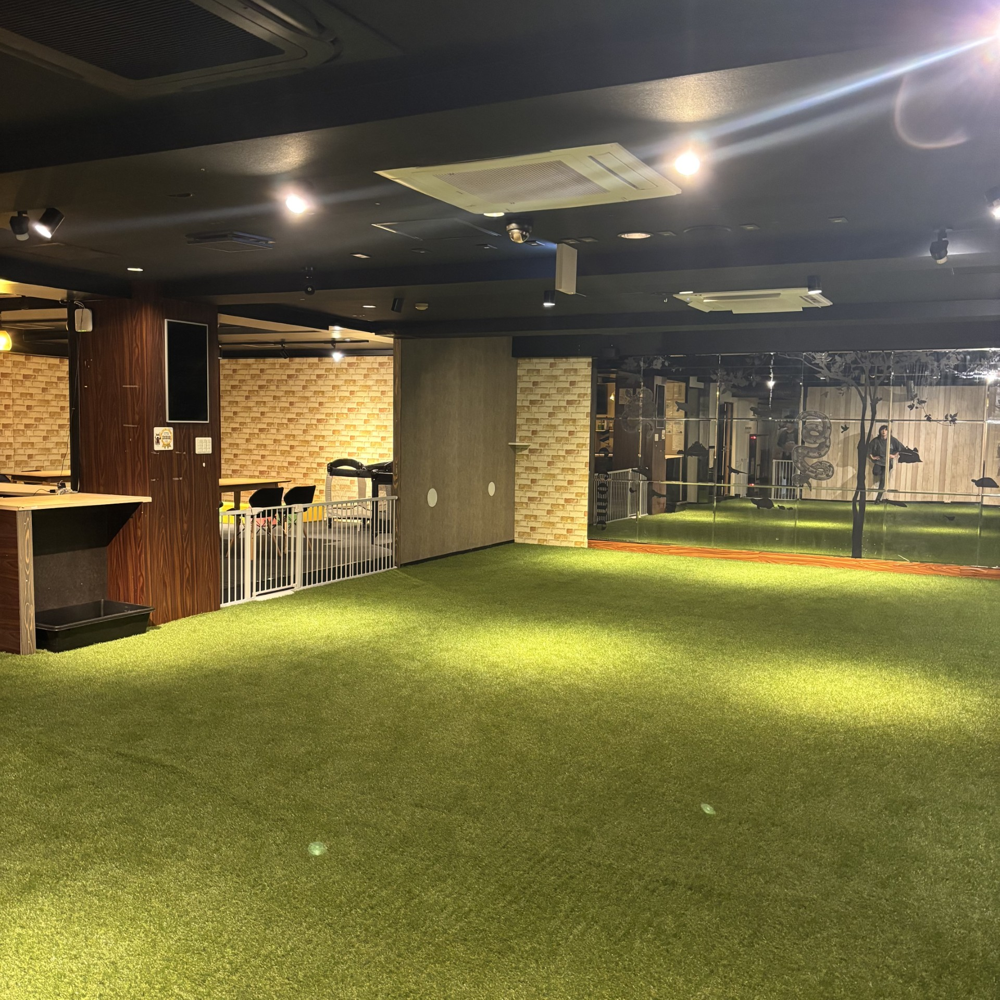
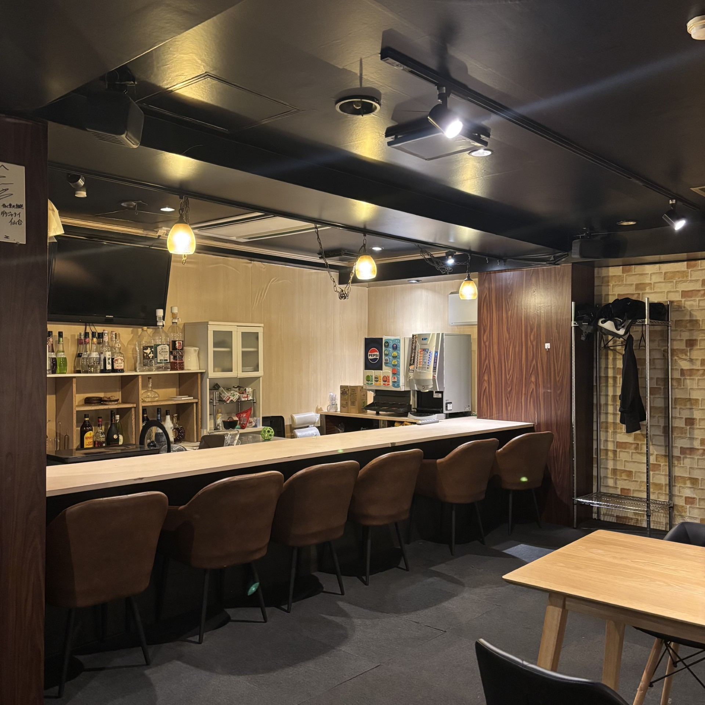
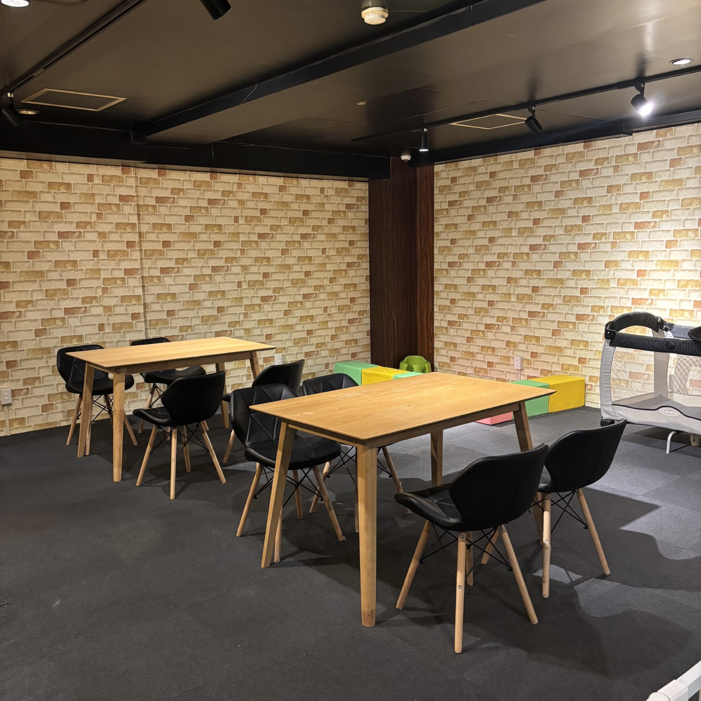
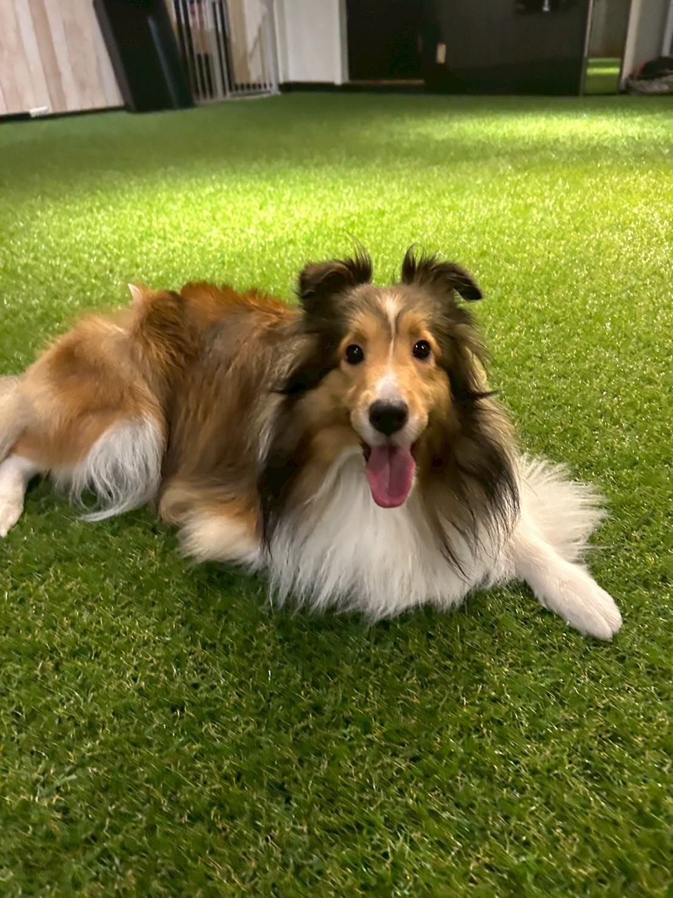
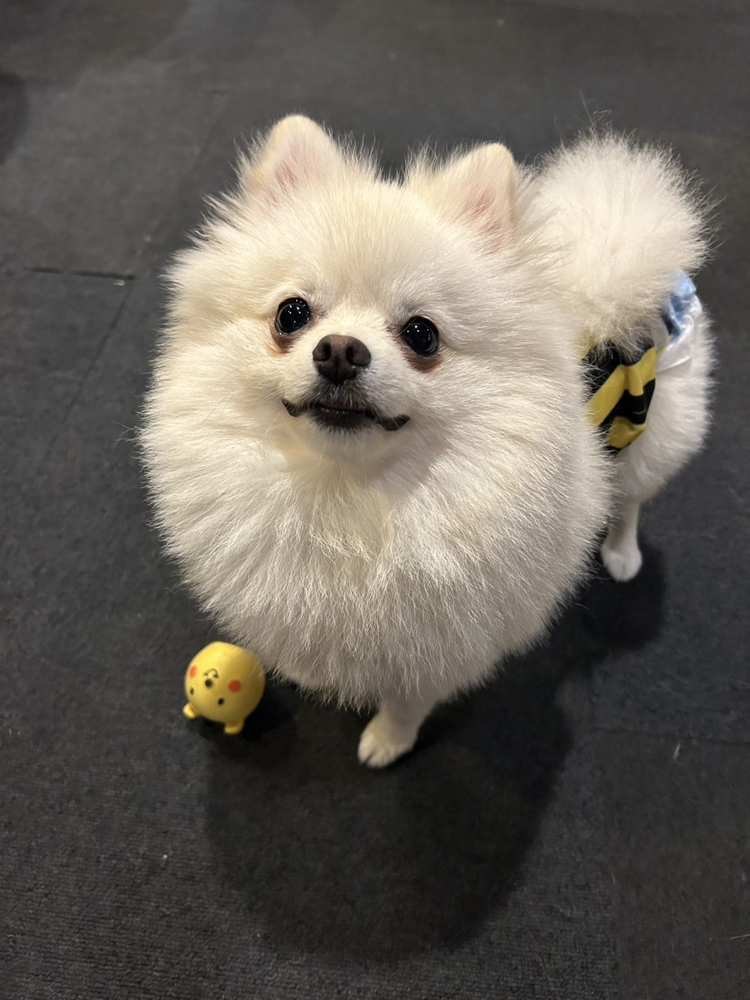
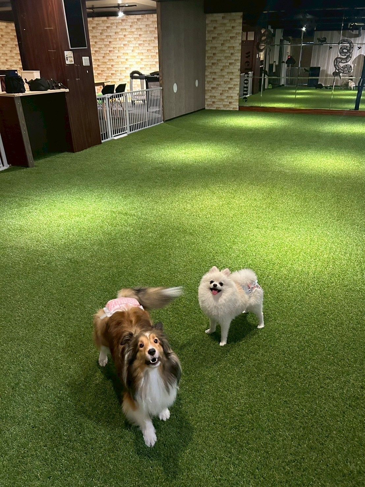

INDOOR DOG RUN & CAFE
都会の真ん中に、
わんちゃんのための“緑のひろば”を。
夏も冬も、雨の日も雪の日も、
いつでものびのび遊べる室内ドッグラン＆カフェ。
室内ドッグラン
ドッグカフェ
ペットホテル
10:00〜翌4:00 不定休
ABOUT - お店紹介
宮城県仙台市・定禅寺通り沿いにある室内型ドッグラン。
夏の日も雨の日も雪の日も、季節や天候を気にせず、わんちゃんと飼い主様が一緒に快適に過ごせる空間です。
ペットホテル、ドッグカフェも完備し、都会の中の“緑のひろば”のような時間をお届けします。
- 住所
- 宮城県仙台市国分町2丁目15-16 デイジービルディング9F
- 営業時間
- 10:00〜翌4:00（不定休）
- アクセス
-
仙台市地下鉄南北線「勾当台公園駅」徒歩3分
近隣にコインパーキング有

PRICE - ドッグラン料金


預かりサービス
1時間からご利用いただける預かりサービスです。
お買い物やお食事、ちょっとしたお出かけの間も、安心してお任せください。
預かり中はスタッフがドッグラン内で遊ばせながらお迎えをお待ちし、個室でのお預かりにも対応しています。


GALLERY - 店内ギャラリー
店内の雰囲気や、わんちゃんたちの様子を写真でご紹介します。





